Now
The current dose, on one screen.
The Now screen shows what to take now, what was left unmarked and what comes next. One tap on “I took it” and you are done. Large text and large buttons, no sign-up.
Medicine reminder
The medicine reminder that rings on time, for you and for those you care for. Large text, large buttons and no sign-up.
Free · “Family and caregiver” as a one-time purchase, no subscription
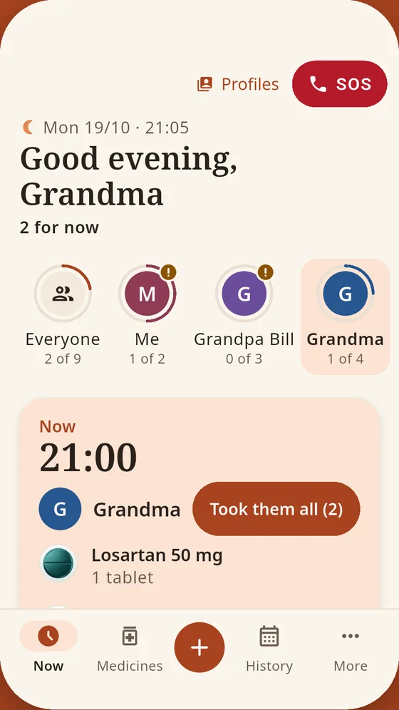
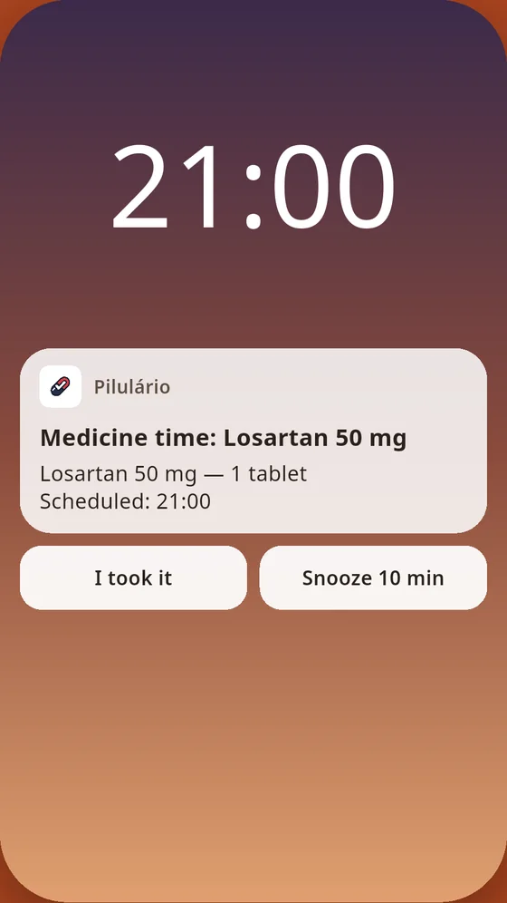
Made for people who take medicine every day and for those who look after someone.
Now
The Now screen shows what to take now, what was left unmarked and what comes next. One tap on “I took it” and you are done. Large text and large buttons, no sign-up.
The alert
The alert comes with the “I took it” and “Snooze 10 min” buttons. Choose how to be alerted: Quiet, Persistent — it repeats until you mark it — or Alarm.
Stock
Count what is in the box and Pilulário shows when it will run out. “I bought more” adds the new box to what is left.
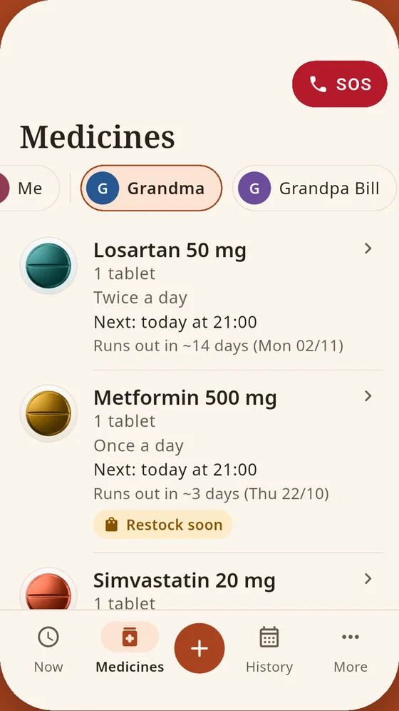
History
The day, the week and the month: what was taken, what was skipped and by whom. Made a mistake? Undo it.
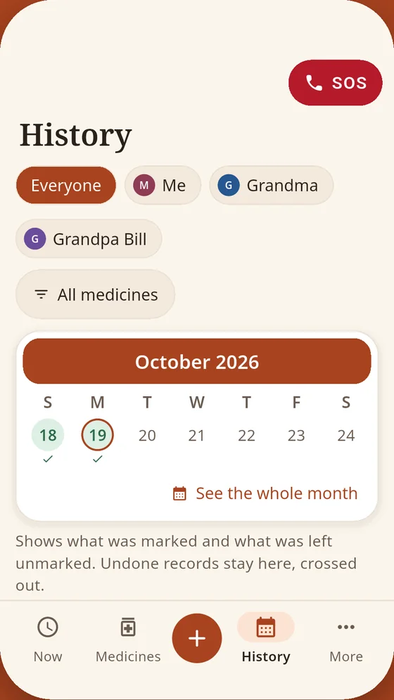
For caregivers
Each person has their own color and photo, their own medicines and alerts. Notes, allergies and precautions are in plain sight for whoever gives the medicine.
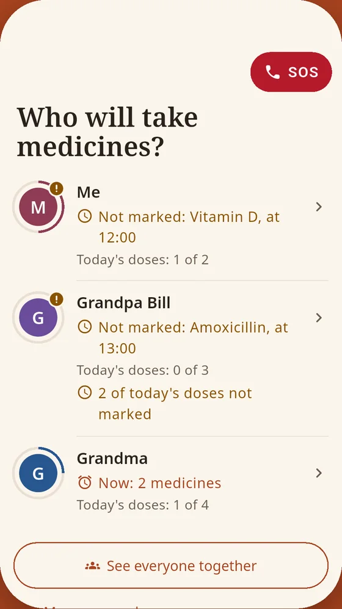
Caregiver handover
Leaving someone else in charge? Pass the medicines on through the camera, without internet, and get back the report of what was given.
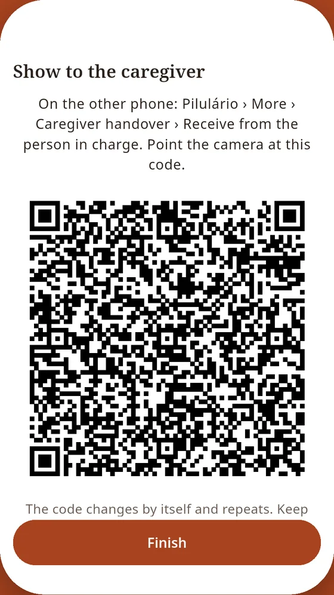
Reminder health
The app checks whether the phone is letting the alerts ring and shows what to adjust. And the SOS button has the emergency numbers and the caregiver’s phone number.
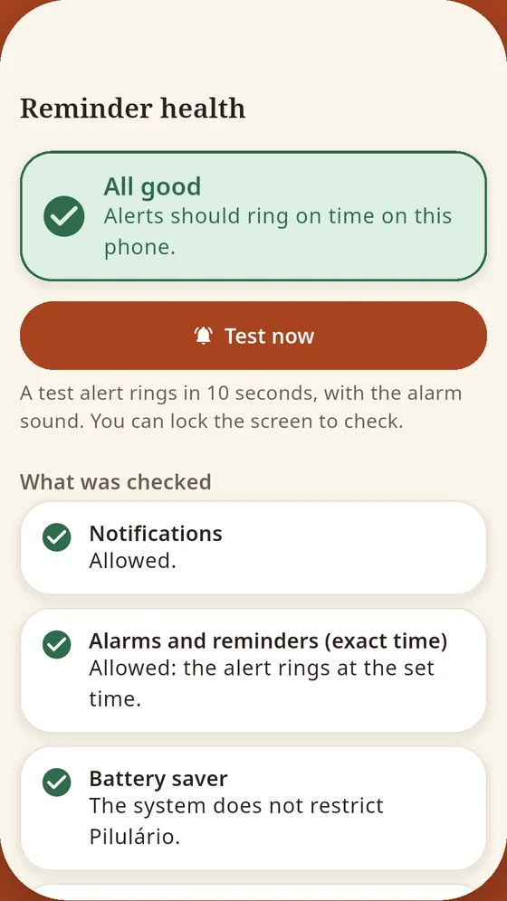
Alerts, stock, history and SOS are free, with no limit on medicines. The one-time purchase “Family and caregiver” adds what makes life easier when you look after more people.
The app’s screens.
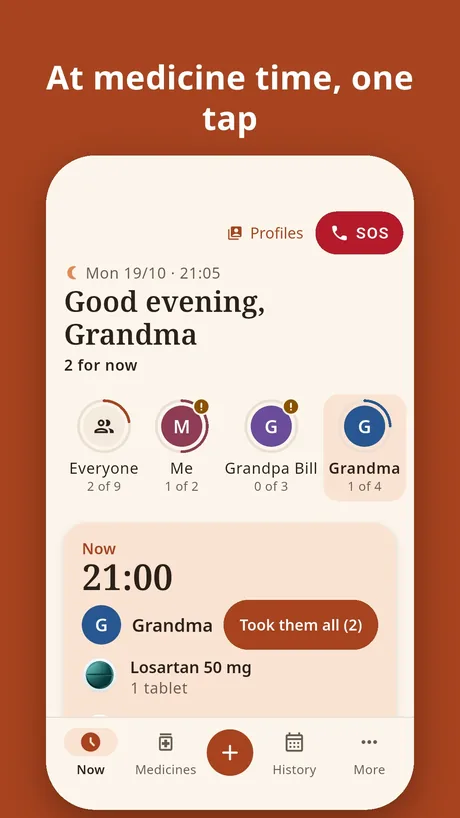
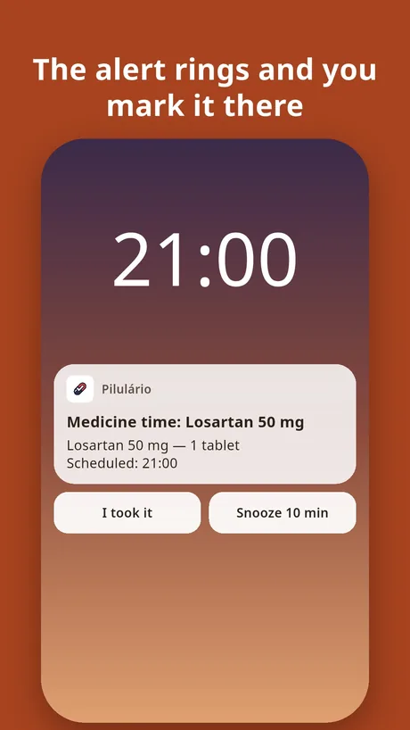
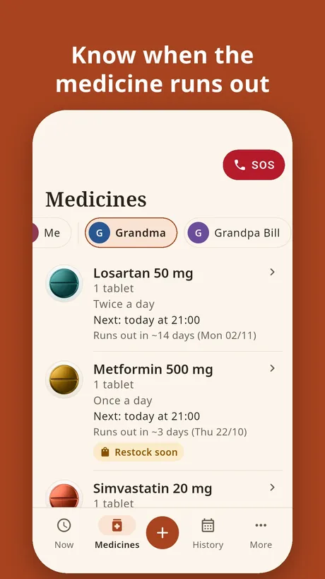
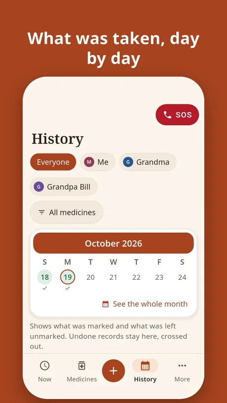
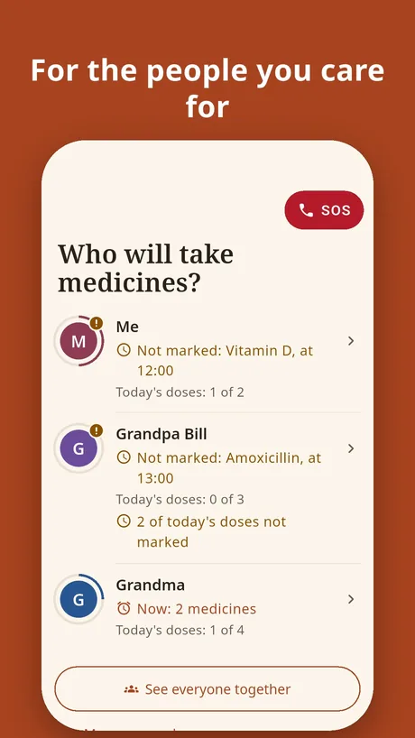
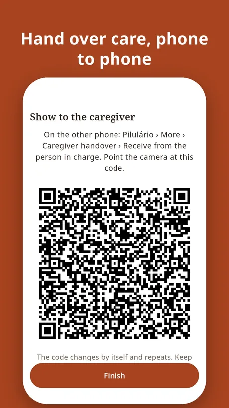
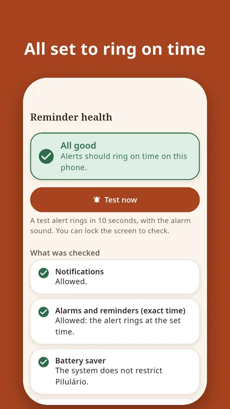
No account, no ads and no data collection. Pilulário does not use the internet: what you type stays on your device and only leaves when you share a summary, export the backup or hand over care to another phone.
Yes. The alarm, stock, history and SOS are free, with no limit on medicines. The one-time purchase “Family and caregiver” adds several people, caregiver handover, notes and Advanced mode. There is no subscription and there are no ads.
Yes. The app does not use the internet: alerts, data and caregiver handover all work with the phone offline. Only the purchase goes through the store.
No. There is no sign-up. To move your data to a new phone, export the backup to a file.
Open Reminder health: the app checks the notification, alarm and battery permissions and shows what to adjust. You can test an alert right away.
No. Pilulário is a reminder: it is not a medical device, it does not suggest any medicine, dose or schedule, and it does not replace the advice of your doctor or pharmacist.
Download it for free on iPhone, iPad or Android.